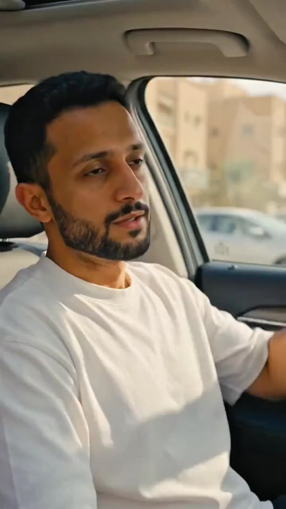
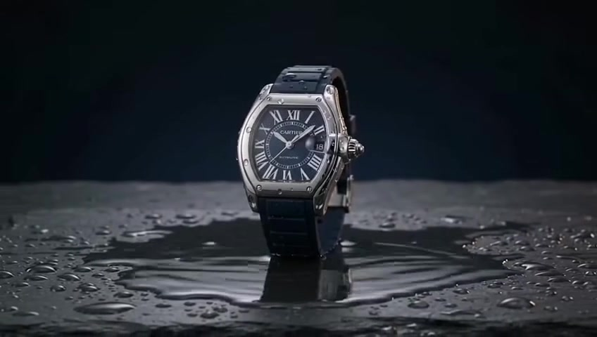

Automotive concept
Rox Adams 26
Concept automotive film — an SUV designed from a blank page, launched in a short film set in a surreal desert of glass monoliths.

THE IDEA
Where experience becomes a system.

AI FILMS
Six AI films. Drag a sleeve aside to see the next one.
Concept automotive film — an SUV designed from a blank page, launched in a short film set in a surreal desert of glass monoliths.

Personal project — an AI promo film for a friend's podcast episode, from a designed title poster to Arabic calligraphy to the studio conversation.

Spec ad — a 17-second vertical film for Nadec juice, from the store shelf to a rooftop gathering, made with minimal resources.

Spec ad — a short cinematic film for Spiro Spathis, built around its iconic green bottle and a warm, nostalgic mood.

Spec ad — a luxury watch film for Cartier, built on macro detail: crown, brushed steel, inside a surreal architectural landscape.

Spec ad — a 10-scene film for a luxury residential compound: an arrival story from the gate to home.
Drag or use arrows
RESEARCH & EXPERIMENTS
Some projects are client-ready work. These are the ones where the question came first — what can this tool actually do, and where does it break?
Tested: can one visual system hold 14 posters from 14 different eras?
Learned: a shared palette, type and framing carry the identity; the era carries the variation.
Open the project ↗Tested: how far can AI ad direction go — can one invented car stay recognisable across surreal scenes?
Learned: the storyboard has to be written before generation, not after.
Open the project ↗Tested: can a brand promise live without a showroom — furniture floating above Cairo?
Learned: the surreal works when sky, light and scale stay consistent.
Open the project ↗Open to consulting, research, creative partnerships, and AI projects where thoughtful process matters.